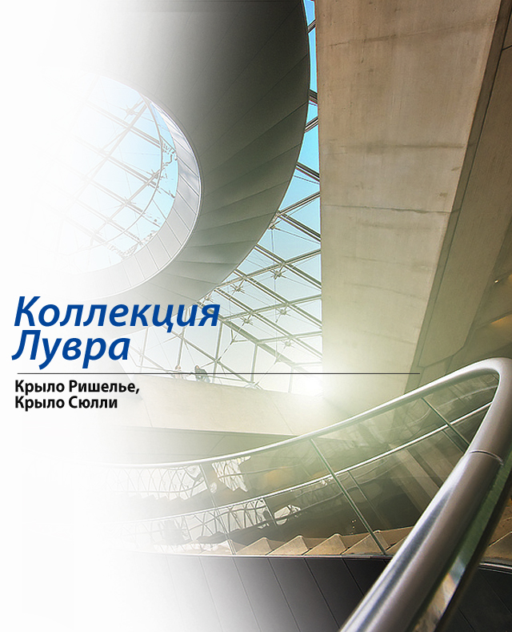

Collectie
Schilderkunst
De verreweg grootste afdeling is Schilderkunst. De Richelieu-vleugel van het museum herbergt de belangrijkste Franse en Noord-Europese collecties, en in Denon bevinden zich de Italiaanse, Spaanse en grootschalige 19de-eeuwse Franse werken. Verspreid daartussen liggen zalen met prenten en tekeningen. Ze worden in een toerbeurtsy- steem tentoongesteld, vanwege hun gevoeligheid voor licht.
Franse schilderkunst
De belangrijkste chronologische rondgang langs de Franse schilderkunst begint op de tweede etage van de Richelieuvleugel en gaat dan rechts rond het Cour Carrée in de Sully vleugel. Zo volg je de ontwikkeling van de prille Franse schilderkunst van voor de renaissance tot Corots landschappen als voorbode van het impressionisme.
Middeleeuwen en renaissance
Er zijn verrassend weinig werken van voor de renaissance. Er zijn enkele intrigerende portretten van Franse koningen, vooral het in Sienastijl geschilderde Portrait de Jean le Bon, de benepen kijkende Karel VII van Jean Fouquet en Jean Clouets twee grootse portretten van Frans I, die koning die veel Italiaanse kunstenaars naar zijn hof haalde. Onderga de vreemde sfeer van de twee Scholen van Fontainebleau (zaal 9 en 10) die sterk beïnvloed zijn door het Italiaanse maniërisme. Twee portretten van koninklijke maîtresses zijn uitdagend erotisch: Diane de Poitiers (Eerste school van Fontainebleau, 1530-1540), maîtresse van Hendrik II, is halfnaakt afgebeeld als de jachtgodin Diana en Gabrielle d’Estrées (Tweede school, 1590-1600), de favoriete van Hendrik IV, neemt samen met haar zus een bad en knijpt in haar tepel alsof ze een kers plukt.
Classicisme
Pas in de 17de eeuw (zalen 12-16), als Poussin ten tonele verschijnt, ontstaat er een duidelijk Franse stijl. De grote thema`s van Poussin, een meester van het Frans dassicisme, zijn ontleend aan de oudheid en de Bijbel en beïnvloedden vele toekomstige kunstenaars. Waarschijnlijk betekent het doek Les Bergers d'Arcadie, met vier herders die de inscriptie ‘Et in Arcadia ego* (ik (ben) ook in Arcadië) uitbeelden, dat zelfs in het paradijs de dood bestaat. De volgende zalen zijn een en al classicisme, voor de ware liefhebber dus, maar er hangen enkele fraaie portretten van Hyacinthe Rigaud, waaronder het doek Lodewijk XIV dat de verschrikkelijke macht van de koning toont, en van Philippe de Champaigne, wiens portret van zijn beschermheer kardinaal de Richelieu nog imposanter is. De schilderijen van Georges de la Tour (zalen 28-29) en de drie broers Le Nain (hun krachtige Le Reniement de saint Pierre werd pas in 2010 door het Louvre verworven) zijn persoonlijker. Le Tricheur van De la Tour is fascinerend vanwege zijn ongemakkelijke evenwicht en het gebrek aan diepte, maar zijn mystiek door één enkele kaars verlichte Saint Joseph charpentier is representatiever.
Van rococo tot realisme
Na het bombastische classicisme van kunstenaars als Le Sueur en Le Brun, zijn Watteaus meer intieme 18de-eeuwse rococo-schilderijen vol beweging een ware verlichting, evenals de krachtige stillevens van Chardin — met name La Raie — en de bezielde schetsen van Fragonard die bekend staan als de Figures de Fantasie, en die volgens overlevering in een uur gemaakt zouden zijn. Van de zuidvleugel van Sully naar het einde van deze afdeling waait een kille neoclassicistische wind langs werken van Gros, Gérard, Prud’Hon, David en Ingres uit de periode na de Revolutie, die nogal contrasteren met de meer sentimentele stijl die begint bij Greuze, tot naar het romanticisme van Géricault en Delacroix, dat vanaf 1820 in de plaats kwam van het neoclassicisme. Ingres’ schitterende portretten waren begrijpelijkerwijs erg in trek in zijn tijd, maar moderne bezoekers voelen zich meer aangetrokken tot zijn naakten: de baadsters van 1808 en 1828, en Le bain Turc (zaal 60), een even sensueel als abstract werk. In de laatste zalen hangen Millet, Corot en werken uit de School van Barbizon, de voorloper van het impressionisme. Voor werken van na 1848 moet je naar het Musée d’Orsay.
Noord-Europese schilderkunst
Het westelijk einde van de tweede etage van de Richelieu vleugel bevat een vrij selectieve collectie Duitse, Vlaamse en Nederlandse schilderijen. De 17de-eeuwse Nederlandse reeks is sterk, met maar liefst twaalf Rembrandts — zoals Bathsheba en Maaltijd in Emmaus (1648) in zaal 31 — en twee serene doeken van Vermeer, De astronoom en De kantwerkster, in zaal 37. Een prachtige collectie van meer dan twintig werken van Rubens is te zien in de Galerie Médicis (zaal 18), een sobere moderne replica van een zaal uit het Palais du Luxembourg. De cyclus is gewijd aan de glorie van koningin Marie de’ Medici en gemaakt in haar opdracht. Rubens schilderde de 300 vierkante meter zelf en zijn wervelende kleuren en lappen wapperende stof zouden Franse schilders van Fragonard tot Delacroix beïnvloeden.
